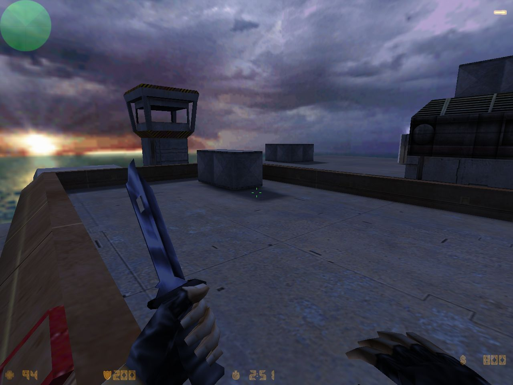

as_oilrig for Counter-Strike by Chris Ashton
Counter-Strike Beta 6.0, released 16 years ago - March 10, 2000
Assassination (as_) maps were brand new, as were Escape (es_) maps!
Kicking off a few days showing off the CS Beta 6.0 maps, already 16 years old!